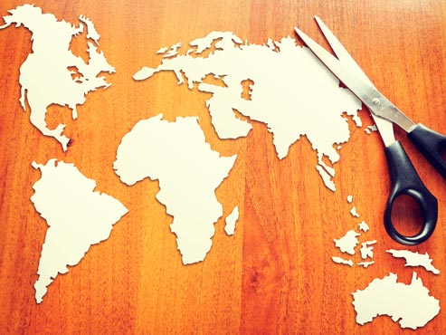
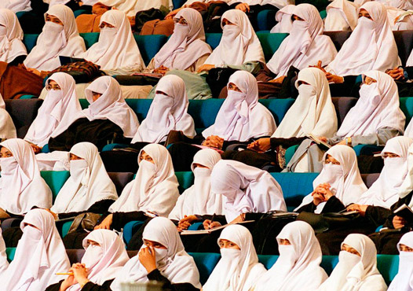
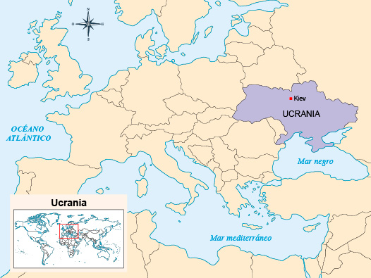
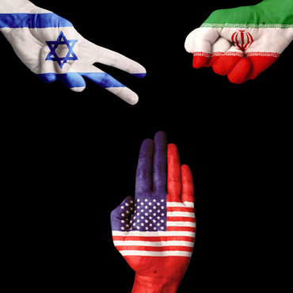

La mayor parte de las sociedades humanas actuales se encuentra involucrada, de una u otra manera, en una red de relaciones mundiales que articula a cada nación, ciudad y región en un tejido social planetario.
-
01
La pugna por un lugar en el nuevo orden mundial
Open or CloseCada día, las personas están más interconectadas y las naciones se vuelven más interdependientes. Así, las acciones de las personas que viven en lugares remotos tienen consecuencias directas en la vida cotidiana de quienes las rodean. De la misma forma, las decisiones que se toman a diario repercuten en comunidades lejanas y desconocidas.
En tiempos de globalización, la red de interdependencias entre los habitantes del planeta es cada día más notoria. Sin embargo, no todos los países ejercen la misma influencia; solo algunos acumulan gran poder económico y político, y por ello protagonizan los conflictos globales del siglo XXI.
Entre las múltiples redes de interdependencias que se tejen en el ámbito global, puede distinguirse un conjunto de fuerzas que se disputan los lugares de privilegio en el nuevo orden. En la competencia por ganar un lugar en la escena mundial, se han consolidado grandes jugadores globales, entre los que se destacan las empresas globales y las potencias, es decir, los países líderes de las grandes regiones del planeta: Estados Unidos, China y Rusia.
Puede afirmarse que los seres humanos del siglo XXI asisten a un periodo de conquistas, como ocurrió en la época de la colonización. Sin embargo, en lugar de que los protagonistas sean los grandes Estados, ahora lo son las grandes empresas privadas y los grupos industriales y financieros. Asimismo, la conquista de las empresas no tiene como objetivo la anexión de territorios sino el control de los mercados y la influencia sobre los gobiernos.
Recuerda
Durante el siglo XXI han surgido conflictos que, muchas veces, han repercutido en agresiones contra la población civil. De la misma forma, se presentan diversas versiones de nacionalismos y fundamentalismos religiosos o étnicos. Los conflictos también se relacionan con el crimen organizado, las redes mafiosas, la especulación financiera, la quiebra de microempresas y la corrupción a gran escala.
El espíritu de competencia global ha promovido el individualismo. Las personas son impulsadas a enriquecerse de manera rápida; asimismo, las empresas buscan un crecimiento vertiginoso, sin detenerse a medir las consecuencias. Ello ha desatado fenómenos como la corrupción, el saqueo de la naturaleza y la criminalidad que, en conjunto, están detrás de muchos conflictos del siglo XXI.
Otros actores globales, como las organizaciones armadas y las milicias, también disputan un lugar en el nuevo orden. Algunas fuerzas globales despliegan pequeños ejércitos privados que apelan a la fuerza y ejercen diferentes formas de violencia para imponer sus intereses.
01.1Comprender los conflictos globales desde una forma global de pensar
Las personas del siglo XXI están llamadas a convertirse en ciudadanos del mundo. Para ello, es necesario desarrollar una forma global de pensar. Actualmente, es imposible comprender las realidades sociales desde una óptica unilateral, como ha sido la manera habitual de abordar los problemas.
Es imposible comprender los fenómenos del mundo de hoy desde una sola perspectiva o desde una sola disciplina. Es necesario aprender a pensar de otro modo: para comprender las realidades planetarias se necesita una forma de pensar planetaria.
El pensamiento global
Permite establecer interrelaciones entre las partes, más que cadenas lineales de causas y efectos. Es decir, ocurre cuando se perciben las cosas en conjunto y no por separado. La expresión "ver el bosque, más que los árboles" ilustra este tipo de pensamiento. Otro ejemplo es el del director de orquesta que percibe lo que ocurre con el todo y, al mismo tiempo, se percata de que cada uno de sus músicos ejecute la partitura que le corresponde.
Una característica destacada del modo de pensar planetario es que para construir una mirada sobre la realidad global se requiere la colectividad. No es posible pensar de forma global, individualmente.
Igualmente, el mundo de hoy exige la capacidad de cambiar y de adaptarse al entorno. La clave es integrar diferentes conocimientos y relacionar diferentes materias, de forma que se abarquen los múltiples niveles de la realidad del mundo actual. Cuando se pretende explicar un conflicto desde una perspectiva global, es posible encontrar varias causas y respuestas correctas para la misma pregunta.
Profundiza
01.2Geopolítica: el planeta como tablero de juego
Las noticias relacionadas con los conflictos de los últimos años registran un repertorio de elementos característicos: guerra contra el terrorismo, intervenciones militares en territorios ricos en recursos naturales, establecimiento o ruptura de acuerdos comerciales entre naciones, construcción de alianzas políticas entre diversos actores globales, democratización, proliferación de pequeñas organizaciones armadas fuera de la ley, mafias, afectación de poblaciones civiles por el conflicto, inicio de guerras civiles y desbordamiento de las identidades étnicas y religiosas.
Vistos en conjunto, los elementos anteriores pueden considerarse parte de las tácticas y estrategias que despliegan los principales actores globales en su pugna por posicionar sus intereses en el mundo.
En diferentes grados, los países participan del juego geopolítico global. De esta forma, cada día el mundo está rehaciéndose y tomando la forma que le imprimen las fuerzas globales.
En efecto, las interacciones entre los principales protagonistas de la globalización sobre el territorio mundial permiten ver cómo el planeta ha sido el escenario de un juego geopolítico. La geopolítica reclama atención como una herramienta para interpretar los conflictos del mundo. Las potencias regionales han desplegado un conjunto de elementos (recursos económicos, ejércitos, empresas, tratados, organizaciones no gubernamentales y medios de información), como si fueran piezas de ajedrez sobre el campo de juego planetario.
En el tablero del nuevo orden mundial, los jugadores establecen relaciones de forma planificada, tratando de anticipar las acciones de sus competidores y buscando apoyo mutuo entre sus diferentes piezas, para lograr la conquista de todo el tablero. En la geopolítica, las potencias regionales, las grandes empresas e incluso las grandes organizaciones armadas también avanzan de forma gradual y, a medida que mueven sus fichas, desencadenan los principales conflictos del presente siglo.
01.3La hegemonía estadounidense y la guerra contra el terrorismo
Estados Unidos es el jugador mejor posicionado actualmente en la partida del ajedrez geopolítico global. Tiene presencia en todos los continentes y se ha involucrado en la mayoría de los conflictos recientes. Sus movimientos afectan e interesan al resto de jugadores mundiales, porque cada vez que mueve sus fichas se producen noticias de interés global.
Recuerda
En su ajedrez geopolítico, la estrategia de Estados Unidos está dirigida a desactivar las amenazas potenciales para su dominio mundial. Para conseguirlo, durante muchos años ha tejido una red global de instalaciones militares y de lazos de cooperación internacional en materia económica y de defensa.
La actividad estratégica de Estados Unidos incluye el papel de policía global, es decir, que transita por los cinco continentes interviniendo en los conflictos, previniéndolos y corrigiendo los posibles movimientos contrarios a su visión del orden mundial.
Según datos del Pentágono, en 2014 Estados Unidos tenía 598 bases militares fuera de su propio territorio, repartidas en todos los continentes. Además, también cuenta con un ejército global, lo que le permite disponer de soldados y material militar en cualquier región del mundo. Vista aérea de la base naval estadounidense de Guantánamo, en Cuba.
Estados Unidos también construye su dominio mediante las intervenciones indirectas. Estas consisten en ejercer influencia sobre un territorio a través de agentes secundarios. Este tipo de conflictos, en principio, son locales, pero luego se internacionalizan, generalmente con el apoyo de Estados Unidos para aquellos que luchan contra gobiernos opuestos a sus intereses.
Una de las zonas más conflictivas es la región del Oriente Medio, territorio muy rico en recursos naturales, particularmente en petróleo. Se caracteriza por ser una región inestable y en permanente conflicto, debido a sus múltiples tensiones culturales, religiosas, políticas y económicas.
El interés de Estados Unidos por controlar los recursos energéticos necesarios para alimentar su economía es la principal razón que explica la presencia de sus tropas de forma permanente en Oriente Medio, así como que esta zona sea uno de los principales escenarios de la "guerra contra el terrorismo". Rangers norteamericanos en Afganistán.
Sin embargo, durante la última década se ha observado una tendencia decreciente de la hegemonía estadounidense sobre el globo. El estancamiento de su presupuesto de defensa debido a la crisis económica de 2008 ha empezado a limitar su participación en los conflictos globales. Al mismo tiempo, el ascenso económico de China lo ha conducido a concentrar sus energías en responder al desafío que representa el gigante asiático que, en 2014, ya superó en valor a la economía norteamericana.
Latinoamérica en el ajedrez global
En los últimos años, Estados Unidos ha encontrado una oposición creciente en Latinoamérica, en particular desde el grupo de Mercosur y, con diferentes intensidades, desde los gobiernos de Venezuela, Ecuador, Bolivia y Argentina. Con motivo del espionaje estadounidense, también Brasil se ha mostrado crítico de las formas de actuar de Estados Unidos en la región.
Además, los países suramericanos han intensificado sus relaciones con otras potencias, como China o Rusia, y también con otras naciones del Asia Pacífico.
01.4Reconfiguración continental y las regiones emergentes del mundo: Asia Pacífico y Eurasia
Como resultado de la redistribución del poder mundial, actualmente se vive la transformación de las regiones del planeta. Hasta hace poco, estas correspondieron a los criterios geográficos y se establecían según la división tradicional de los continentes: África, América, Asia, Europa y Oceanía.
Pero, con el ascenso económico de aquellos países que tradicionalmente no han sido protagonistas del nuevo orden mundial, más las nuevas alianzas entre países y bloques, se está reconfigurando el mapa regional mundial. Especialmente, cobran importancia dos regiones emergentes: Asia Pacífico y Eurasia.
01.4.1Asia Pacífico
En el siglo XXI, el centro de gravedad industrial, comercial, financiero y de la geopolítica mundial se está desplazando hacia la cuenca del océano Pacífico. Esta región cubre el este del continente asiático y su parte sureste, incluyendo la región que tradicionalmente se denominó Oceanía. Asia Pacífico es una vasta región que abarca el territorio de cerca de cincuenta países.
El ascenso de la región comenzó después de la Segunda Guerra Mundial, cuando Japón despegó económicamente, seguido por las sucesivas generaciones de los "tigres" y de los "dragones" asiáticos: Corea del Sur, Taiwán, Hong Kong y Singapur; e Indonesia, Tailandia, Malasia y Filipinas, respectivamente.
A dichos países se sumó recientemente el desarrollo extraordinario de China e India. Adicionalmente, el papel protagónico que han cobrado países como Australia, Nueva Zelanda o Vietnam, terminaron por convertir a la región en un actor clave de la globalización, tanto así, que se está modificando la forma en que tradicionalmente se observa el mapa del mundo. Ahora, podría contemplarse desde la perspectiva asiática y no desde el eurocentrismo.
Sin lugar a dudas, Asia Pacífico es hoy el motor de la economía mundial. Según diversos análisis, las economías asiáticas contribuirán en más del 50% al crecimiento mundial en los próximos diez años. La región tiene un gran significado, no solo por sus tasas de crecimiento económico, sino también por su incidencia en temas como el medio ambiente, las migraciones, la ciencia, la tecnología y la seguridad mundial.
En la región cabe destacar el papel de China, actualmente primera economía del mundo, miembro permanente del Consejo de Seguridad de Naciones Unidas y un país con el potencial suficiente para cuestionar la hegemonía estadounidense. Asimismo, es un hecho relevante que la clase media mundial se concentra hoy en Asia, factor que hace atractiva la zona para la inversión extranjera.
Datos que ilustran la realidad de la región Asia Pacífico
Su territorio cubre el 17% de la superficie terrestre y concentra alrededor del 60% de la población mundial. En el 2012, representó alrededor del 35% del PIB mundial y el 32% de las exportaciones e importaciones mundiales. Los salarios en el mundo crecieron a una media del 2% en 2013, mientras que en Asia Pacífico han aumentado un 6% en promedio, según datos de la Organización Mundial del Trabajo. Asimismo, la región concentra el 69% del total de las reservas mundiales de divisas, situación que le da capacidad de acción, respuesta y movilidad ante las crisis económicas.
Por otra parte, a diferencia de otras regiones del mundo, el crecimiento económico de Asia está acompañado de éxitos en la lucha contra la pobreza y el mejoramiento del nivel de vida de sus pobladores. El número de personas que viven en la extrema pobreza ha descendido de 1.500 millones a 947 millones entre 1990 y 2008. Por lo tanto, la región va camino de alcanzar el Primer Objetivo de Desarrollo del Milenio (ODM), que es reducir a la mitad la proporción de personas que viven en la pobreza extrema.
Recuerda
Latinoamérica posee grandes recursos mineros, energéticos y alimenticios, que Asia Pacífico necesitará para mantener su nivel de crecimiento. Ello explica los acercamientos recientes entre ambas regiones, que se han concretado en iniciativas de integración y en inversiones, en particular de China, para la construcción de infraestructura.
01.4.2Eurasia
Durante muchos años se consideró que Europa y Asia eran continentes diferentes. No obstante, tras la caída del bloque socialista y la apertura de Rusia y China hacia Occidente, Eurasia se está transformando en una región planetaria.
Ello se explica debido al alto nivel de interacciones e interdependencias económicas, políticas y estratégicas que han adquirido sus territorios, que van desde China, pasando por medio Oriente, Asia central y Oriente próximo, hasta llegar a Europa oriental y, finalmente, a Europa occidental.
Recuerda
Europa y Asia forman en realidad una sola masa continental. Puede considerarse a Eurasia como un continente real desde el punto de vista físico y geológico. También puede apreciarse una continuidad cultural, si se tiene en cuenta que muchas de sus naciones comparten la misma base lingüística. Pero el factor económico es el que más pesa en la construcción de Eurasia como región. Durante los últimos años, sus territorios están cada vez más interconectados en el contexto de la globalización.
Eurasia es lugar de tránsito de grandes recursos energéticos y de personas; contacto entre grandes mercados de mercancías y financieros. También, es un espacio en el que se juega un alto porcentaje del equilibrio del sistema global. Asimismo, en Eurasia se escenifica una de las mayores polarizaciones del mundo contemporáneo: el mundo occidental, cristiano y moderno, y el mundo oriental, musulmán y tradicional.
Considerada como una unidad, Eurasia constituye la región más grande del mundo contemporáneo. Actualmente, junto con Estados Unidos, planean la conformación de la zona libre de comercio más grande del mundo, con un mercado de 700 millones de personas y el 46% del PIB mundial, según fuentes de Transatlantic Trade and Investment Partnership. La materialización de una región de tales dimensiones tendría importantes consecuencias laborales, ambientales y económicas para el mundo.
Eurasia es el escenario de las principales tensiones y conflictos del mundo global. Cualquier poder que controle la región tendrá bajo su dominio más del 50% de los recursos económicos del mundo.
Una de las regiones más significativas de Eurasia es Europa occidental, término que define al conjunto de países situado en la parte oeste de Europa, sobre el Océano Atlántico. La región incluye países de economías capitalistas, de altos ingresos, aliados con Estados Unidos y miembros de la OTAN. Históricamente, corresponden a las antiguas metrópolis coloniales que basaron su desarrollo en la explotación de los territorios y poblaciones de África, Asia y América Latina.
Una importante influencia en la región de Asia central es Rusia, potencia energética que mantiene importantes tensiones con Estados Unidos por imponer sus intereses y por defender sus áreas de influencia. Otro foco de tensión con Rusia lo constituyen los antiguos países que conformaban la Unión de Repúblicas Socialistas Soviéticas, que tras su disolución pasaron a ser países independientes.
Otra región clave dentro de Eurasia es el Oriente Medio. En dicha zona se protagonizan hoy los conflictos más violentos del planeta, en particular por parte de grupos fundamentalistas, quienes ven como enemigo al modo de vida occidental. Por ello, confrontan violentamente la presencia de medios de comunicación, de los ejércitos, de los trabajadores y de cualquier influencia ajena a su tradición cultural.
Eurasia también conecta al gigante asiático, China, con Europa occidental, en un acto que recuerda las antiguas rutas de la seda, la milenaria red de rutas comerciales que articuló las grandes civilizaciones asiáticas, árabes y occidentales, cuya mezcla ha producido algunas de las revoluciones culturales más importantes en la historia de la humanidad. Eurasia también incluye a Rusia, India y China, como tres de los nuevos cinco grandes protagonistas de la globalización, denominados BRICS.
01.5Consolidación
Actividades para consolidar lo que has aprendido en esta sección.
-
02
Claves para comprender los conflictos del siglo XXI
Open or CloseSi bien es cierto que los conflictos han formado parte de la vida de todos los pueblos, los de los últimos veinte años siguen pautas diferentes. No puede desconocerse que las situaciones de extrema violencia y las crisis humanitarias típicas del siglo XX continúan hoy. Sin embargo, es posible identificar razones para creer que los conflictos en el planeta están entrando en un ciclo diferente.
Según el programa de datos sobre Conflictos de la Universidad de Uppsala [VER], el número de conflictos armados se ha reducido, pasando de 32 conflictos armados de gran intensidad en 1990 a 17 en 2009. Asimismo, a excepción del caso de Siria e Irak, al comienzo de la segunda década del siglo XXI, no se encuentra un conflicto armado que genere más de 10.000 víctimas mortales en el curso de un año.
Estas cifras señalan un cambio en el modelo de los conflictos. No significa que los conflictos armados estén desapareciendo, ni mucho menos que la guerra no constituya un recurso para resolverlos. Pero las maneras como se desenvuelven están cambiando cualitativamente y, en comparación con el siglo XX, la resolución armada de los conflictos es un fenómeno en declive.
02.1Las transformaciones de los conflictos bélicos en el tercer milenio
Es indiscutible que el siglo XX fue el más funesto en la historia de la humanidad. Por lo menos 115 millones de personas perecieron en los conflictos armados durante ese periodo. Pero, en el siglo XXI, la guerra como institución social ha perdido legitimidad para resolver los conflictos entre naciones. De hecho, salvo la guerra entre Palestina e Israel, las guerras tradicionales entre Estados están desapareciendo del panorama global.
La nueva generación de conflictos armados tiene como común denominador la aparición de actores no estatales. Si en las guerras del pasado los ejércitos nacionales se enfrentaban entre sí, en los conflictos contemporáneos se lucha principalmente contra milicias. Dichas organizaciones armadas generalmente están relacionadas con grupos contrincantes de Estados Unidos y de sus aliados en el liderazgo del proceso de globalización. La organización Al-Qaeda constituye el modelo de la nueva era de conflictos.
Las milicias son la forma prototípica de las organizaciones no estatales. Se componen por hombres reclutados por la fuerza o que toman voluntariamente las armas, ya sea para defender un proyecto en el que creen o al servicio de empresarios o políticos. Pueden recibir o no una paga regular. Las milicias incluyen variantes, como los paramilitares y los mercenarios. Osama Bin Laden fue el fundador de la red terrorista Al-Qaeda.
En algunos casos, los actores armados no estatales despliegan capacidades militares semejantes a Estados nacionales. Generalmente, están relacionados con actividades como el fundamentalismo, la narco-guerra o el crimen organizado, que han alcanzado un nivel de desarrollo que pone en peligro la seguridad de las naciones. En dicho contexto, Estados Unidos emerge como el principal referente para la seguridad global en el siglo XXI. La superioridad de las fuerzas militares convencionales de Estados Unidos obliga a los nuevos actores a evitar el enfrentamiento directo y optar por enfoques no convencionales.
Los conflictos bélicos actuales se desarrollan bajo la mirada de los medios informativos y de la opinión pública global, apoyados en transmisiones digitales y satelitales. Paradójicamente, a pesar de esto, los entornos hostiles dificultan el acceso a la información sobre lo que ocurre y muchos de los conflictos bélicos no son cubiertos por los medios informativos, condenando a sus víctimas al olvido por parte de la opinión pública mundial.
Los conflictos del siglo XXI
Casi todos los conflictos armados del siglo XXI son guerras civiles, conflictos internos muchas veces limitados a determinadas zonas de un país. Esto dificulta la percepción de la dimensión de los conflictos, especialmente cuando algunas zonas no se ven afectadas, como las capitales.
Otro factor típico de los conflictos actuales es el saqueo de los recursos naturales de regiones ricas en materias primas y minerales estratégicos. Dichos recursos sirven para alimentar la guerra, es decir, se intercambian riquezas naturales por armas, en un círculo vicioso en el que muchas veces se ven involucradas empresas que se conectan con las grandes transnacionales a través de las redes de mercados globales, pequeños ejércitos y políticos.
El ocaso de las guerras regulares también trajo el ocaso de sus códigos de conducta. En los conflictos contemporáneos cualquier medio es válido: deshumanización, ataques armados a civiles, secuestros, violaciones masivas a mujeres, ataques suicidas contra civiles, bombardeos indiscriminados en zonas residenciales, ejecución mediática de prisioneros, saqueo de aldeas, utilización de armas prohibidas (como las bombas de racimo y las minas antipersona) y emboscadas, sin medir las consecuencias sobre la población civil, que es la principal víctima.
En síntesis, la guerra del siglo XXI es diferente. En ella se utilizan todos los medios diplomáticos, las herramientas de inteligencia, los instrumentos de interdicción policiaca, las influencias financieras y el armamento disponible.
02.2Los conflictos como oportunidades para el cambio social
Tanto para los individuos como para los grupos, los conflictos se presentan como oportunidades para aumentar la comprensión de nosotros mismos y de los otros. Los conflictos permiten mejorar la forma como se vive mediante la construcción de soluciones en las que todas las partes involucradas se beneficien.
El conflicto es inevitable en las relaciones humanas. Por ello, en lugar de negarlo o de evitarlo es importante verlo como una oportunidad de desarrollo y de mejora de la convivencia. Históricamente, el conflicto ha sido la principal palanca de transformación social.
Para lograrlo es importante empezar a considerar la diversidad y la diferencia como un valor, como riqueza. En definitiva, el problema no es la presencia de conflictos, sino lo que se hace cuando aparecen, es decir, la respuesta que se les da. No todos los grupos o individuos humanos resuelven sus conflictos mediante las armas y la violencia. Los conflictos también asumen formas creativas, que involucran menos fuerza y más comunicación.
Recuerda
En el mundo actual se consolida la cultura de la negociación, en la cual los procesos de paz son protagonistas. La mitad de los conflictos armados están en negociaciones. De los 40 conflictos finalizados en los últimos veinte años, 33 lo hicieron mediante un acuerdo de paz y solo 7 con victoria militar.
02.3La mezcla de factores económicos, culturales y políticos en los conflictos del siglo XXI
Los conflictos actuales son el resultado de una mezcla de factores. Por ello, han dado lugar a las "guerras híbridas", en las cuales se entrelazan variables económicas, políticas y culturales interdependientes, y las acciones conflictivas están determinadas por acontecimientos que se producen en distintas partes del mundo.
02.3.1El motor económico
El signo característico de la economía global es la competencia feroz entre grupos económicos. Las disputas entre empresas por controlar recursos estratégicos han dado lugar a un clima propicio para los conflictos bélicos, que involucra miles de millones de dólares. La economía contemporánea empuja a unos Estados a intervenir en regiones del planeta, con el objetivo de acceder a recursos y a mercados imprescindibles para su crecimiento económico.
La competencia agresiva en pos de los recursos estimula a grupos armados a controlar territorios y, así, obtener ganancias jugosas en corto tiempo, aunque de forma ilegal. Ello explica que grandes zonas del planeta crecen económicamente mientras que, simultáneamente, colapsan sus gobiernos.
La necesidad de las partes armadas por reabastecer sus arsenales y lavar sus ingresos, introduce circuitos del mercado negro, en el cual el intercambio económico es regulado por el ejercicio de la violencia. El comercio mundial de drogas constituye una de las fuerzas propulsoras de la dinámica de la construcción redes criminales vinculadas a los conflictos armados.
En suma, diversas transacciones económicas enlazan las guerras con la economía global. Muchas guerras globales empiezan en escritorios de ejecutivos que toman decisiones económicas, las cuales desencadenan la acción de redes sustentadas en la violencia y que operan globalmente. Dichas redes se extienden hasta la economía formal, camuflándose y dificultando su detección.
02.3.2El motor cultural
En el mundo global, cada vez cobran más fuerza factores culturales como la estigmatización del adversario, su inferiorización, su exclusión y hasta su negación y eliminación física. Las particularidades culturales, las identidades religiosas, raciales, o geográficas diferentes provocan hoy los mayores enfrentamientos de naturaleza violenta.
El refuerzo de las identidades y las disputas culturales cada vez ejerce un papel más importante en los escenarios conflictivos del tercer milenio. Las modalidades de conflicto cultural, nacional, étnico, regional y religioso han aumentado en intensidad y escala. El feminismo de la igualdad aboga por la equiparación legal y jurídica entre hombres y mujeres. Mujeres pakistaníes atienden a un discurso del presidente de su país, general Pervez Musharraf, en marzo de 2002, durante una convención nacional en Islamabad.
La polarización dentro de las sociedades es un fenómeno que tiende a extenderse. El aumento progresivo de diferencias irreconciliables entre los miembros de una sociedad es un caldo de cultivo para la emergencia de conflictos armados, así como para la conformación de zonas de violencia generalizada.
02.3.3El motor político
Las luchas por la transformación de los regímenes políticos constituyen la principal razón política que enfrenta a los pueblos del siglo XXI, especialmente los relacionados con intereses independentistas y nacionalistas. Para 2014, existían más de 60 conflictos separatistas, algunos motivados por razones étnicas y religiosas, otros debidos a la discriminación y la marginación entre unos y otros grupos en los repartos de los poderes, o debido a las inequidades en la distribución de las riquezas.
En los regímenes en transición a la democracia es particularmente difícil reducir la polarización social. Algunos países que logran emprender procesos de negociación política de sus conflictos armados, corren el riesgo de ver trasladados de escenario los enfrentamientos violentos hacia las ciudades.
Cerca de la mitad de los conflictos actuales están relacionados con demandas de autogobierno. En dichos contextos, la inquietud global se sitúa en cómo construir estructuras políticas intermedias que satisfagan las demandas identitarias. Generalmente, son conflictos que enfrentan minorías a Estados centralizados y a nacionalismos excluyentes.
La otra mitad de la tipología de conflictos políticos está orientada a producir cambios estructurales que permitan la democratización de un país. Muchas guerrillas afirman luchar por ese objetivo, aunque la mayor parte de los grupos armados de la actualidad también se mueven por intereses políticos o económicos, con frecuencia vinculados al control de actividades ilícitas como el narcotráfico o el comercio de materias primas estratégicas.
02.4¿Qué es un conflicto bélico?
En ocasiones, el manejo del conflicto por las partes involucradas da lugar a enfrentamientos bélicos. En ellos, se utilizan armas para persuadir, disuadir o eliminar definitivamente a los adversarios.
Se entiende por conflicto armado al enfrentamiento:
- Protagonizado por grupos armados, regulares o irregulares, con objetivos percibidos como incompatibles mutuamente y en el que se usa de forma continuada y organizada la violencia.
- Que genera mínimo cien víctimas mortales en un año.
- Que produce un impacto grave en el territorio, como la destrucción de la infraestructura o de la naturaleza.
- En que una o ambas partes practican la interrupción de los servicios públicos básicos, el desplazamiento de la población, la violencia sexual, la inseguridad alimentaria y/o el desequilibrio psicológico sobre el tejido social de una comunidad, como parte de sus estrategias para derrotar al enemigo.
- En que las partes pretenden alcanzar objetivos diferenciables de la violencia común.
- Que se opone a la estructura militar, política, económica, social o ideológica de un Estado, o a la política de un gobierno.
- En que existe una lucha por debilitar a quienes ostentan el gobierno y por controlar los recursos, la población o el territorio.
Dichas características dan forma al extremismo y al fundamentalismo, es decir, a acciones que pretenden imponerse por la fuerza como verdades únicas y que, por lo tanto, niegan la existencia de puntos de vista diferentes. Además, mediante la violencia pretenden infundir el temor y hasta eliminar a quienes no ven la realidad de la misma manera.
Ideologías como causas de conflicto armado
En algunos casos, lo que motiva la acción armada es que una de las partes contendientes desea introducir elementos esenciales de la ley islámica en las instituciones y en la legislación del Estado. En otros casos, la acción armada busca el establecimiento de un sistema político y económico de tipo socialista.
En ciertos casos, los grupos armados no disponen de la capacidad bélica suficiente como para tomar el gobierno de un Estado, pero mantienen su actividad armada con el objetivo de erosionarlo y mantener activas y visibles sus demandas. Este tipo de situación se reconoce en el ámbito de la conflictividad global como tensión, entendida como el resultado del encuentro entre dos o más actores que persiguen objetivos, y que conlleva altos niveles de movilización política, social o militar y a un uso de la violencia con una intensidad que no alcanza la de un conflicto armado.
Profundiza
02.5Consolidación
Actividades para consolidar lo que has aprendido en esta sección.
-
03
Los conflictos actuales en Eurasia
Open or CloseAlgunos de los conflictos más significativos en la actualidad se desarrollan en Eurasia. En esta zona existen casos representativos de las diferentes tensiones y de los intereses que desencadenan los conflictos. Se examinarán aquellos que involucran a un conjunto de fuerzas globales, que muchas veces actúan desde la distancia, aunque no sean tan evidentes ni protagonicen directamente los enfrentamientos.
La mayoría de los conflictos, a excepción de la disputa entre Israel y Palestina, y entre India y Pakistán, se producen dentro de los límites de un país, por lo cual se consideran internos. Otros, en cambio, comienzan siendo internos y luego se internacionalizan.
Algunos factores vinculados con la internacionalización de conflictos son: la intervención de terceros países, la lucha global contra el terrorismo, la participación de combatientes extranjeros, la entrada en combate de ejércitos para el mantenimiento de la paz y la utilización del territorio de países vecinos por parte de grupos armados de oposición.
03.1El retorno de los nacionalismos en la Unión Europea
La cuestión del nacionalismo es clave para entender algunas tensiones actuales en Europa. El aumento de la presión migratoria hacia Europa, sumada a la crisis económica y al hastío con una clase política corrupta y que reduce el Estado de bienestar, están dándole fuerza a los movimientos nacionalistas dentro de la Unión Europea, en especial en Europa occidental.
El nacionalismo del siglo XXI está vinculado al rechazo a los extranjeros (xenofobia) bajo el argumento de que "hacen peligrar los puestos de trabajo"; también, a reivindicaciones territoriales y a identidades étnicas. El resurgimiento del nacionalismo en Europa es un fenómeno que debe tenerse en cuenta ya que la Unión Europea es una comunidad constituida hace 25 años, tiempo que no le ha bastado para consolidar la unión frente a las fuerzas que pretenden su disolución.
Recuerda
Durante el siglo XX, las guerras emprendidas bajo el estandarte del nacionalismo casi destruyen el continente europeo. Desde allí se tejieron las confrontaciones, la violencia política, la guerra civil y, en su momento más desbordado, el genocidio y el totalitarismo.
A pesar de los problemas que alguna vez trajo el nacionalismo, las esperanzas de muchos europeos parecen encontrar en él hoy su expresión, mientras que la Europa unificada es vista como una carga y como una amenaza.
El caso de Francia genera especial inquietud, ya que el partido nacionalista (Frente Nacional) se ha consolidado como la tercera fuerza política. Sin la participación activa de Francia, la Unión Europea se vería debilitada estructuralmente. Hay que recordar que, junto a Alemania, Francia es indispensable para el futuro de la Unión.
La crisis radica en el malestar económico y financiero de la eurozona. Sin embargo, ni los gobiernos nacionales ni las instituciones de la Unión Europea parecen contar con las herramientas apropiadas para resolver el problema. Por ello, la angustia económica ha dado lugar a un conflicto con respecto a la distribución de los recursos, de los puestos de trabajo y la legislación para admisión de inmigrantes.
La presencia de personas de otras culturas en las ciudades de Europa genera diversas reacciones. Muchas veces, las costumbres y modos de vida de los extranjeros son vistos desde prejuicios que refuerzan los nacionalismos.
Lo que durante la creación de la Unión Europea fue una relación entre iguales, ha dado paso a un enfrentamiento entre países deudores y países acreedores. La desconfianza mutua que caracteriza este conflicto corroe el proyecto europeo. Mientras que en el norte de Europa se teme la expropiación sobre sus bienes, en el sur la población se encuentra atrapada en una crisis económica desde el 2008, lo que se ha manifestado en un nivel de desempleo sin precedentes, como en el crítico caso de Grecia.
Una de las intenciones de la integración de Europa fue hacer imposible la guerra. Por ello, la Unión Europea se sustentó en el principio de no discriminación por nacionalidad. Pero la crisis económica ha debilitado la solidaridad y está a punto de desbordar el problema.
03.2Nuevas formas de fascismo en Europa
Las tendencias de los últimos años indican el crecimiento en Europa de movimientos ultraderechistas que promueven discursos fascistas. Es una forma de pensar que vuelve a presentarse como alternativa ante la crisis económica.
Uno de los principales focos de movimientos fascistas puede situarse en grupos de jóvenes más afectados por la crisis, ya que ven reducidas sus expectativas vitales. Estos realizan actividades de violencia física y simbólica contra aquellos considerados como extranjeros. Mas no solo entre los jóvenes prolifera el racismo y la xenofobia. También se expresa entre algunos miembros de las principales instituciones políticas, de gobierno, económicas y culturales, desde donde se legitima el discurso de ultraderecha.
Los factores que favorecen la reaparición del fascismo
Hoy se conjuga una serie de factores que promueve la aparición de un clima adverso para los extranjeros en Europa. El principal es el alto nivel de desempleo en las principales capitales del viejo continente. Otros factores son la migración masiva de africanos y de latinos hacia las ciudades europeas pero, en particular, la creciente presencia de la religión musulmana y de la comunidad judía en Europa.
La crisis de una clase política tradicional desprestigiada, marcada por la corrupción, facilitó el afianzamiento electoral de partidos de extrema derecha con discursos y actitudes de rechazo hacia el "otro". Estos partidos perciben la inmigración como una amenaza y promueven el endurecimiento de las políticas de asilo y la reducción drástica de la inmigración. Se oponen a la asimilación de los inmigrantes y a lo que denominan la "islamización" de su sociedad.
En años recientes, la inmigración ha pasado a ser el tema clave para los gobiernos de Eurasia. Actualmente, a los migrantes los agobia el desempleo, sumado a las medidas punitivas que los gobiernos toman contra ellos. Se han convertido en los "chivos expiatorios" de los problemas económicos de la región. Manifestación en Barcelona, España, a favor de los derechos de los inmigrantes (septiembre de 2001).
Los resultados de las últimas elecciones al Parlamento Europeo mostraron el aumento del apoyo a los partidos nacionalistas en Estados como Francia, Reino Unido, Dinamarca, Austria, Hungría, Alemania, Bélgica, Holanda, Suiza, Noruega, Grecia y Portugal.
Es paradójico que mientras que en el continente se abren las puertas para la libre entrada y salida de flujos de dinero, al mismo tiempo se limitan y se condenan los libres movimientos de la población.
03.3Rusia y sus tensiones con la OTAN
Tras la caída de la Unión Soviética, durante la década de los noventa, Rusia padeció una recesión económica tan grave como la gran depresión de 1930 en Europa y Estados Unidos. En el siglo XXI, Rusia volvió a emerger como un gigante económico y como un protagonista de primer orden en la construcción del mundo global.
Actualmente, Rusia, considerada la séptima economía del mundo, detenta el tercer presupuesto militar más grande del planeta y es una de las cinco naciones con armas nucleares. Además, cuenta con el mayor arsenal de armas de destrucción masiva del mundo.
Rusia posee las reservas más grandes de recursos energéticos y de minerales del mundo. En su territorio están las mayores reservas de gas natural, la segunda mayor de carbón y la octava de petróleo. Posee las mayores reservas de recursos forestales y la cuarta parte de agua dulce (no congelada) del mundo. También, es el segundo país exportador de metales. Por ello, Rusia es considerada una superpotencia energética.
El gobierno ha desplegado una iniciativa para su fortalecimiento y posicionamiento económico global. Promovió una alianza política y económica para conformar la Unión Euroasiática, que incluiría la unión aduanera y monetaria con Bielorrusia y Kazajistán. Asimismo, un espacio económico único, ampliable a otros Estados de la Comunidad Económica Euroasiática y la Comunidad de Estados Independientes.
Ucrania es un territorio fundamental para la construcción de dicha alianza. Para el futuro de Rusia, Ucrania es una de sus principales bases, porque sin ella quedaría debilitada. Ello explica las tensiones actuales entre Rusia y la OTAN, en particular con Estados Unidos y la Unión Europea por controlar dicho territorio.
Recuerda
La extraordinaria extensión de Rusia ha creado entre sus dirigentes la sensación de vulnerabilidad. Dicha percepción se ha visto reforzada por las intervenciones de potencias occidentales en territorios vecinos a Rusia como, Serbia o Irak. Como fueron realizadas sin contar con la opinión de Rusia, generó la sensación de que estaba siendo "cercada".
Desde entonces, Rusia ha estado preocupada por garantizar su seguridad. El gobierno ruso ha desplegado una política agresiva en defensa de sus áreas de influencia. Por ejemplo, las intervenciones en Georgia, en 2008, o actualmente en Crimea y Ucrania. Sin embargo, la consolidación territorial de Rusia ha encontrado la oposición del mundo occidental, especialmente a través de los líderes de la OTAN.
Tras las intervenciones en Ucrania, Estados Unidos y la Unión Europea arremetieron contra la economía rusa. Aprobaron paquetes de sanciones contra Moscú que afectaron a bancos, funcionarios, empresarios y parlamentarios, algunas compañías y sectores enteros de la economía rusa. Una presión adicional al conflicto ha sido el ingreso a la OTAN, en los últimos años, de una decena de países que pertenecieron al antiguo Pacto de Varsovia.
Rusia respondió con bloqueos para el sector agrícola y alimentario de Estados Unidos y Europa. Incluyó la interrupción de las compras de alimentos en los mercados occidentales de carne, pescados, embutidos, legumbres, hortalizas, lácteos, verduras y frutas.
Recuerda
Según datos de la Comisión Europea, el valor de las exportaciones europeas al mercado ruso correspondiente a los productos agrícolas y alimentarios sancionados por Rusia alcanza los 5.200 millones de euros, con la puesta en riesgo de 130 mil empleos. Por tal motivo, Rusia prevé aumentar sus importaciones de alimentos desde Latinoamérica.
Un escenario sensible para la conflictividad que se avecina para la Rusia del siglo XXI se relaciona con el sistema antimisiles de Estados Unidos, desplegado en Europa oriental. Dicha acción ha generado, como respuesta, el desarrollo de misiles balísticos de última generación en Rusia.
03.3.1Ucrania
Ucrania es conocida como una nación industrial que produce maquinaria pesada, aviones, trenes y tanques. También se conoce como "el granero de Rusia", debido a la fertilidad de sus tierras. Además, posee reservas de gas.
Ucrania constituye la región de mayor fricción entre los países de la OTAN y Rusia, desde el final de la Guerra Fría. La actual crisis ucraniana implica intereses de todos los continentes y en su territorio se libra una pugna de cuyo resultado depende, en buena parte, el futuro global. Además, Ucrania padece tensiones internas que no ha logrado resolver desde el colapso de la Unión Soviética, en 1991.
Además de la expansión de la OTAN hasta las fronteras rusas, desde hace varios años la Unión Europea inició conversaciones con los seis países fronterizos del Este (Armenia, Azerbaiyán, Bielorrusia, Georgia, Moldavia y Ucrania) con el objeto de suscribir acuerdos de asociación con ellos.
Rusia viene reconstruyendo su espacio geopolítico previo a la caída del comunismo. Una de las formas principales es la Unión Aduanera de la cual Ucrania es una pieza clave. Por otra parte, Rusia la surte de energía y el 85% del gas ruso que consume Europa pasa a través de Ucrania.
Ucrania se encuentra dividida entre quienes anhelan integrarse a la Unión Europea y quienes quieren estar bajo influencia de Rusia. Una es prooccidental, cristiana-católica, de habla ucraniana y nacionalista, que ve con recelo a Rusia. Y la otra, suroriental ortodoxa, de habla rusa, y con fuertes afinidades con Rusia ya que la considera garantía para su estabilidad y su seguridad.
En 2013, los prooccidentales, reunidos durante varias semanas en la Plaza de la Independencia, dieron lugar al movimiento político conocido como Euromaidán. Su protesta se dirigió contra el jefe del gobierno, proclive a los intereses de Rusia y quien se negó a firmar un acuerdo de asociación con la Unión Europea. Finalmente, cayó su gobierno; esto representa el distanciamiento con respecto a Rusia y un acercamiento a la Unión Europea.
Paralelamente, en una región al sur de Ucrania tuvo lugar un evento clave: Crimea, lugar en el que vive una mayoría de población de origen ruso, desestimó el deseo de relacionarse con Europa y expresó sus intenciones secesionistas de Ucrania y su interés de alinearse con Rusia. Para ello, convocaron un referendo de adhesión a Rusia, aunque en el mundo occidental los observadores no pudieron verificar su legitimidad.
Crimea es un sitio estratégico, ya que allí se encuentra la flota naval rusa, que además usufructúa el puerto de Sebastopol hasta el año 2042. Rusia tomó parte activa en dicha situación y envió a sus tropas, las cuales tomaron el control de las ciudades más importantes de Crimea. En marzo de 2014, Rusia anexó a sus territorios Crimea y la ciudad de Sebastopol.
Lugansk y Donetsk, regiones de Ucrania limítrofes con Rusia, han manifestado su deseo de separarse de Ucrania. Dicha situación marcó la apertura de un nuevo frente en el conflicto entre el gobierno de Ucrania y los separatistas prorrusos. Los rebeldes prorrusos y el ejército ucraniano aceptaron un alto al fuego en agosto de 2014, pero los combates continuaron. Un nuevo alto al fuego fue pactado en febrero de 2015.
03.3.2Georgia
El destino de Georgia ha estado marcado por su vecindad con Rusia. Desde el siglo XIX, el territorio de Georgia fue añadido al imperio ruso. En el siglo XX, fue anexado a la Unión Soviética.
Con la caída del bloque socialista, Georgia se convirtió en escenario de las disputas entre Rusia y la OTAN. Su territorio constituye un corredor de salida para el petróleo y el gas, tanto para beneficio de Rusia como de Estados Unidos, naciones que cuentan con gasoductos en el país.
Las tensiones en Georgia vienen acumulándose desde la década de los noventa, años en los que Rusia entregó pasaportes rusos a los residentes de las regiones limítrofes con su territorio (Osetia del Sur y Abjasia). Fueron 350.000 mil georgianos convertidos en rusos.
Por su parte, en su cumbre de 2008, la OTAN dio su aprobación para el ingreso de Georgia a la organización. Asimismo, la elección del presidente Saakashvili en 2006 promovió un discurso nacionalista y antirruso.
Mapa de Georgia y las regiones separatistas. Inmediatamente después de la elección del presidente Saakashvili, en 2006, en las regiones georgianas de Abjasia y Osetia del Sur, territorios limítrofes con Rusia y de relevancia estratégica para el transporte energético, emergieron movimientos separatistas respaldados por Rusia. Estos movimientos reivindicaron su reconocimiento como naciones independientes de Georgia.
En 2006, tanto Rusia como Georgia retiraron mutuamente a sus embajadores y aumentaron su presencia militar en dichas regiones. Finalmente, se reactivaron los enfrentamientos armados, dando lugar a combates por el control de Tsjinval, la capital regional, entre la milicia georgiana y los separatistas apoyados por las tropas rusas.
Estas últimas, tras utilizar el poderío de su arsenal militar, consiguieron controlar la ciudad. El conflicto incluyó el saboteo de medios de comunicación y el ataque a sitios web. Buena parte de la población tuvo que ser evacuada.
La limpieza étnica es una práctica realizada por ambos bandos. Se intenta borrar del mapa la presencia del bando rival. En total, la guerra ha producido unos 20 000 muertos y 300 000 desplazados, llegando a situaciones en las que ciudades, como Gori, han quedado abandonadas. Desde 2012, el Parlamento de Georgia funciona en la ciudad de Kutaisi.
03.3.3Chechenia
El pueblo checheno se ha enfrentado desde el siglo XIX a Rusia, con motivo de la diferencia étnica y religiosa entre Chechenia y Rusia. Los sentimientos antirrusos crecieron a mediados de siglo XX, cuando Stalin los acusó de haber colaborado con el ejército de Hitler y ordenó su deportación masiva hacia las zonas de Siberia.
Tras el fin de la Unión Soviética, los chechenos expresaron de nuevo sus tendencias separatistas respecto a la esfera de influencia rusa. Una de las dos únicas regiones autónomas que se negaron a firmar el tratado de federación de 1992 fue Chechenia. Tal reivindicación encontró eco debido a que los chechenos encuentran su identidad en la religión islámica y ven a los rusos como un pueblo predominantemente ortodoxo.
La cuestión musulmana en Rusia no es asunto menor; solo en Moscú viven dos millones de musulmanes, y uno de cada seis rusos profesa la religión musulmana. A ello hay que añadir que Rusia ha hecho de la iglesia ortodoxa uno de los pilares principales de su política.
En contraste, Chechenia cada vez se convierte más en un Estado que se identifica con la religión islámica. La enseñanza laica ha sido sustituida por la islámica, donde el aprendizaje del Corán es obligatorio. Asimismo, cada distrito cuenta con un juez islámico cuyas sentencias, basadas en la sharia, son inapelables.
Recuerda
No hay que perder de vista los factores económicos. Chechenia es una región rica en petróleo. Además, existe un oleoducto que cruza el Cáucaso y atraviesa Chechenia, transportando el petróleo de los campos de la región del Mar Caspio y donde Estados Unidos tiene intereses energéticos. Desde esa perspectiva, Chechenia es una pieza del ajedrez que cada potencia utiliza según sus necesidades.
Tras la primera guerra, ocurrida entre en 1994 y 1996, los rusos aceptaron retirar todas sus fuerzas de Chechenia. Pero la intervención rusa envió el mensaje de que Moscú no dudaría en usar la fuerza para impedir tentativas de independencia. La economía chechena se desplomó y el país empezó a ser controlado por mafias. En 1999, el país estuvo al borde de la guerra civil. Los secuestros, el tráfico de armas y el robo de petróleo eran moneda corriente.
La segunda campaña empezó en 1999 y fue presentada por las autoridades rusas como una operación antiterrorista interna, dirigida contra fundamentalistas islámicos. Dio inicio, tras el incidente de la invasión chechena a Daguestán, sumada a varios atentados terroristas en Moscú, atribuidos a los chechenos.
En medio de un bloqueo informativo, Grozni, la capital, fue destruida en el año 2000 mediante bombardeos aéreos. Así, Rusia restableció el gobierno directo del Kremlin sobre Chechenia. Sin embargo, los combatientes chechenos se retiraron hacia la región montañosa al sur del país y lanzaron desde allí ataques guerrilleros y acciones armadas contra la población civil. En el 2003, la ONU denominó a Grozni "la ciudad más destruida de la Tierra".
En 2002, un grupo armado checheno tomó por asalto al teatro de Moscú, exigiendo la retirada del ejército ruso de Chechenia. Sin embargo el episodio tuvo un desenlace trágico y Rusia se negó a reconocer las demandas chechenas. El mismo año ocurrieron atentados, secuestros y emboscadas de la guerrilla, que destruyó la sede central del gobierno prorruso en Grozni. En 2004, dos aviones civiles explotaron y una acción violenta contra un colegio provocó más de 300 muertos, continuando con la escalada de violencia de los radicales chechenos. En ese mismo año resultó electo como presidente un partidario del gobierno ruso, el cual fue asesinado por los separatistas. Su hijo lo reemplazó en 2007 como presidente.
En 2009, la operación antiterrorista en Chechenia había terminado oficialmente. Hasta el momento, se calculan entre 25 000 y 50 000 las víctimas. La región sigue sufriendo una situación inestable. La guerrilla continuó sus operaciones. La estrategia actual de los rebeldes es cometer ataques terroristas fuera de Chechenia.
03.4Los musulmanes en la cultura occidental
Históricamente, una constante desde la cultura occidental radica en ver las diferencias culturales (costumbres, creencias o valores diferentes o desconocidos) como incorrectos o negativos, e incluso como más atrasados en el camino al desarrollo.
La acción conjunta de los medios de comunicación, las instituciones políticas, los currículos universitarios, y en general, el uso cotidiano del lenguaje en las relaciones sociales, contribuye a la creación y difusión de representaciones negativas sobre las culturas no occidentales, como la cultura árabe desde la que se profesa el ser musulmán y la fe islámica.
Lo islámico, lo árabe o lo musulmán se percibe en la cultura occidental a través de un filtro que construye una imagen única del Islam y de la cultura musulmana. Dicho filtro también condiciona la relación de los occidentales con los musulmanes que habitan en las ciudades occidentales, como ocurre hoy en Europa occidental.
La imagen que se proyecta identifica a quienes practican el Islam con personas atrasadas y violentas. La tendencia de los medios noticiosos es al uso recurrente de expresiones como "la violencia islámica" o el "terrorismo islámico", que equipara a la organización Al-Qaeda o a los grupos fundamentalistas con todos los musulmanes.
El uso masivo de los adjetivos islámico e islamista para definir el terrorismo practicado por grupos de procedencia musulmana, crea un estigma y constituye una generalización. Lo mismo ocurre con la información sobre la discriminación a las mujeres. Se asocia esa religión directamente con la violencia.
Es importante destacar que muchas de las intervenciones militares justifican sus acciones sobre territorios ocupados por poblaciones musulmanas con base una imagen sesgada del mundo islámico, haciéndolos ver como peligrosos para la vida occidental.
Profundiza
03.5Chiitas y sunitas en los conflictos en Medio Oriente
Los musulmanes constituyen un cuarto del total de la población mundial. Dentro de la tradición musulmana existen dos grandes corrientes: la Sunita y la Chiita. Los conflictos entre chiitas y sunitas son muy antiguos en la historia del Islam. Actualmente, sus diferencias tienen repercusiones tanto en el mundo musulmán como a nivel global.
Si bien esta división en ocasiones es clave para comprender la organización geopolítica de Oriente Medio, en otros casos la cuestión étnica juega un rol más atenuado. Pero no puede negarse que el hecho de que Irán sea chiita o que Arabia Saudita sea sunita tiene importantes implicaciones para la comprensión de dichos conflictos, más aún cuando estos dos poseen los mayores abastecimientos petroleros del mundo.
Recuerda
Los conflictos actuales entre los sunitas y chiitas son, en buena medida, una herencia de las divisiones territoriales y de las fronteras impuestas por las potencias europeas durante el siglo XX, cuando ejercieron el colonialismo sobre los territorios musulmanes. Francia y Reino Unido trazaron el mapa de Medio Oriente a mediados de la Primera Guerra Mundial. Entonces se crearon Estados como Siria e Irak.
Hoy en día, el factor principal que los diferencia no radica en el factor religioso o étnico, sino en la forma como conciben el Estado. Mientras que los sunitas promueven un Estado secular, es decir, donde haya separación entre el Estado y la religión, los chiitas promueven un Estado teocrático, es decir, aquel donde converge la fe con el proyecto político.
Sin embargo, los dos grupos son musulmanes y se rigen por el Corán. Las prácticas y creencias de los dos grupos son básicamente las mismas y la mayoría de los musulmanes, ya sean sunitas o chiitas, coexisten pacíficamente.
03.5.1Chiitas
Los chiitas constituyen aproximadamente el 15 % de los musulmanes. Son mayoría en Irán, su centro demográfico y político. También son mayoría en Irak, Kuwait y Azerbaiyán. Un país con predominio chiita y gobierno sunita es Bahréin. También existen importantes minorías en Yemen, Líbano, Pakistán, Afganistán, Arabia Saudita y Siria.
Los chiitas gobiernan en potencias regionales, como Irán e Irak. Controlan regiones ricas en combustibles como Azerbaiyán y Bahréin. Los campos petroleros más grandes de Irak se encuentran en zonas chiitas, y hay más de dos millones de "twelvers", chiitas en las regiones ricas en petróleo de Arabia Saudita.
La particularidad religiosa de los chiitas radica en la importancia de sus líderes espirituales, quienes poseen poderes ejecutivos en el Estado y además son los responsables de la correcta interpretación del Corán y deben demostrar un conocimiento perfecto de la ley. Dentro del chiismo también es importante el culto a los santos.
Recuerda
Históricamente, su separación de los sunitas se atribuye a que los chiitas afirman que Mahoma designó como su sucesor a alguien de su línea familiar de sangre; por ello, creen que el liderazgo de la comunidad musulmana debe ser hereditario. Con el tiempo, los chiitas se dividieron internamente, formando sectas. La más grande es la de los imamíes o duodecimanos, seguida de los alauíes, los zaydíes y los ismailíes.
03.5.2Sunitas
Los sunitas constituyen el grupo musulmán mayoritario, al que pertenece un 85%. Gobiernan la mayor parte del mundo islámico; se ubican principalmente en Arabia Saudita, Afganistán, Pakistán, Jordania, Kuwait, Yemen, Emiratos Árabes Unidos, Egipto, Túnez, Catar, Libia y Turquía. Un país con predominio sunita y gobierno chiita es Siria.
En Irak, los sunitas derrocados en 2003 por la intervención estadounidense, reactivaron su animadversión sobre los chiitas. Esto creó una espiral de violencia. Por ejemplo, revitalizó los miembros sunitas de la milicia del Estado Islámico, quienes participan activamente en la guerra civil iraquí.
La particularidad religiosa de los sunitas radica en que la religión no ostenta el poder temporal. Por ello, diferencian el gobierno religioso del gobierno civil. Cualquier creyente puede ser intérprete del mensaje divino. Ello implica que no existe una estructura clerical y que rechazan la teología.
Arabia Saudita es la capital espiritual del mundo sunita. En la imagen se aprecia la Mezquita del Profeta, construida en la ciudad de Medina, la ciudad sagrada más importante del sunismo; allí se encuentra la tumba de Mahoma. Es el segundo lugar más sagrado del Islam y una de las mezquitas más grandes del mundo.
Los sunnitas también se han dividido internamente. Existe una corriente denominada wahhabista, desarrollada en Arabia Saudita, que sostiene una política puritanista, es decir, un regreso a los valores originarios del Islam. Dicha corriente predica una postura radical frente a asuntos como el arte o las mujeres. Varios grupos terroristas, como Al-Qaeda, Boko Haram o el Estado Islámico se alinean con dicha corriente.
Históricamente, su separación de los chiitas se fundamente en la creencia en que Mahoma no nombró un sucesor, y que el mejor de sus fieles puede guiar a la comunidad y debe ser elegido por consenso.
Recuerda
Los sunitas reciben su nombre debido a la importancia que dan a la Sunna, nombre que recibe la colección de dichos y hechos atribuidos a Mahoma y transmitidos en forma oral. Así, no solo se basan en el Corán sino también en la Sunna, lo cual permite interpretar el Corán según las exigencias de la época.
03.6Afganistán: el fundamentalismo talibán y las milicias de Al-Qaeda
Tras los atentados contra el World Trade Center y el Pentágono en 2001, Estados Unidos puso en marcha la denominada "Guerra contra el terrorismo", mediante el despliegue de operaciones militares y con el objeto de neutralizar a los grupos armados con interés en atentar contra las potencias occidentales. Un objetivo primario de la operación militar fue la intervención en Afganistán, país que fue visto como un refugio para organizaciones radicales armadas, y su gobierno fue acusado de dar apoyo a quienes ejecutaron los atentados.
Las pistas llevaron hacia la organización Al-Qaeda, encabezada por Osama Bin Laden. Dicha organización tuvo como origen el régimen político islamista radical por parte de los talibanes en Afganistán. Estos últimos permitieron la apertura de campos de entrenamiento de terroristas de Al-Qaeda.
Los talibanes son una facción político-militar fundamentalista. Tomaron el control del gobierno afgano tras la retirada del ejército de la Unión Soviética, a finales de los años ochenta. En ese momento, Estados Unidos apoyó a los talibanes porque los consideraba anti-iraníes, anti-chiíes y pro-occidentales.
En la década del noventa, los talibanes mutaron en una poderosa fuerza militar y política. Están organizados en células autónomas que hacen parte de un movimiento único, a la manera de las franquicias.
Tanto Al-Qaeda como los talibanes afganos pretenden acabar con la influencia extranjera en territorio afgano. Al-Qaeda funciona como una corporación a la que se integran diversas milicias pertenecientes al islamismo fundamentalista. Llegó a tener miembros en más de 60 países. Dicha organización incentivó la producción y el tráfico de heroína como un arma en su guerra contra Occidente. Hoy en día, Afganistán es el primer productor de opio en el mundo.
El régimen Talibán impuso reglas de vida muy estrictas al pueblo de Afganistán. La música, la televisión, el cine y cualquier actividad relacionada con el entretenimiento fueron prohibidas. Enseñar el cristianismo constituye un delito castigado con la pena de muerte. También destruyeron edificios valiosos por su arquitectura y estatuas religiosas.
Estados Unidos inició sus acciones contra Afganistán en 2001, invadiendo con sus fuerzas armadas el país y derrocando al régimen talibán, con el apoyo de la OTAN y Pakistán. La operación duró un mes. En noviembre de 2001, Estados Unidos consideró que había ganado la guerra.
Sin embargo, el derrocamiento del régimen no puso fin a la actividad de los talibanes, quienes continuaron dominando algunos territorios mediante la guerra de guerrillas. Debido a la permanente intervención militar de los países occidentales, en muchas ocasiones los talibanes ha encontrado apoyo entre la población, porque son vistos como los defensores frente a la invasión extranjera. Manifestantes actuando en las calles de Peshawar (Pakistán), en octubre de 2001, como protesta por los ataques aéreos estadounidenses contra el ejército talibán de Afganistán.
Tras la eliminación de Bin Laden, en 2011 por parte de Estados Unidos, la democracia implantada no se ha consolidado. Múltiples atentados contra militares y civiles ocurren año tras año, la producción de opio y heroína se ha convertido en una empresa que corrompe y debilita las instituciones.
En diciembre de 2014, Estados Unidos dio por finalizada su misión en Afganistán. Con ello sacó la mayor parte de sus tropas y a partir de 2015 mantiene una presencia militar limitada. El futuro de Afganistán se proyecta incierto.
03.7La Primavera árabe
En diciembre de 2010, Mohamed Bouazizi, un joven de 26 años, vendedor ambulante de fruta, agobiado por la precariedad de la vida en Túnez y por el maltrato de las autoridades, se impregnó el cuerpo con gasolina y luego se inmoló en un mercado.
Este hecho desató una reacción popular que, en días, derrocó al gobierno autoritario de Túnez, el cual había durado 25 años. El joven se convirtió en símbolo de la resistencia popular, ante la elevación del costo de vida y los abusos de los regímenes autoritarios.
Dicho movimiento social desencadenó réplicas en forma de movilizaciones antiautoritarias, de protestas multitudinarias y hasta el derrocamiento de gobiernos. Egipto, Arabia Saudita, Libia, Siria Yemen, Argelia, Mauritania, Sudán, Omán, Jordania y Bahréin fueron los principales escenarios, dando lugar a un fenómeno social que los medios denominaron como la "Primavera árabe".

La oleada de protestas democráticas en el mundo árabe encontró simpatías y apoyos entre muchas personas e instituciones del mundo occidental, así como la condena de las acciones represivas de los gobiernos.
La serie de conflictos tuvo en común la lucha de diferentes sectores sociales, en particular los jóvenes, por mejorar sus condiciones de vida, así como para defender los derechos y libertades de sus habitantes frente al autoritarismo de los gobiernos de la región. También fue clave el uso de redes de comunicación e Internet.
Después de las movilizaciones, en la mayoría de los casos se convocó a elecciones. Paradójicamente, los partidos tradicionales y las jerarquías religiosas salieron fortalecidos de los procesos electorales, dejando así como minoría a quienes derribaron la dictadura. Solo un solo caso, entre la gama de países que protagonizaron la Primavera árabe, inició una transición hacia la democracia: Túnez. Dicho país logró fortalecer sus estructuras democráticas.
Guerras civiles en los países de la Primavera árabe
En los países de la Primavera árabe se descompusieron las instituciones de gobierno y la población se dividió en facciones, dando inicio a guerras civiles. Las guerras se caracterizan por las divisiones tribales y tensiones sectarias crecientes entre los musulmanes sunitas y los chiitas en la región. Dichos conflictos involucran un amplio abanico de actores no estatales armados, como las milicias y los grupos yihadistas, afines a Al-Qaeda y el Estado Islámico, soldados mercenarios, jóvenes radicalizados, líderes religiosos, y traficantes de drogas, armas y personas.
Los casos particulares de las guerras civiles en Siria e Irak son particularmente graves. Están inmersos en una espiral de violencia sectaria que no ha tocado fondo. Un Irán chiita y una Arabia Saudita sunita están librando una guerra indirecta en suelo sirio. Allí, se ha intensificado el conflicto bélico y se estima en cientos de miles la cifra de muertos.
03.8El programa nuclear iraní
El denominado "programa nuclear iraní" involucra una serie de factores que lo convierten en uno de los principales puntos de tensión entre los grandes actores geopolíticos de la región. Según cómo se desarrollen los hechos en este escenario, podría verse transformado sustancialmente el statu quo regional.
El programa consiste en laboratorios de investigación, una mina de uranio, un reactor nuclear, y algunas instalaciones de procesamiento de uranio que incluyen una planta de enriquecimiento y la elaboración de agua pesada.
Recuerda
Irán posee el 40% de los recursos petroleros y de gas de Oriente Medio y es el cuarto productor mundial del crudo. También es la capital espiritual de los musulmanes chiitas, quienes tienen un conflicto histórico con los sunitas. Asimismo, Irán controla el Estrecho de Ormuz, camino de entrada y salida hacia el Golfo Pérsico, por donde transita la mitad del comercio mundial de hidrocarburos.
El bloque liderado por Estados Unidos e Israel argumenta que Irán pretende construir armas nucleares. Sospechan que Irán encubre la fabricación de armas nucleares tras el programa de desarrollo de energía atómica. Irán rechaza las acusaciones y defiende los fines pacíficos de su programa para desarrollar la capacidad de generar energía nuclear. Además, Irán presenta a Israel como la verdadera amenaza, ya que Israel posee armas atómicas.
Israel señala que el régimen iraní tiene antecedentes de haber planteado la eliminación del Estado de Israel. Por ello, teme que, de contar con armas nucleares, las utilice en su contra. Esto lo convierte en el actor que más presión ha ejercido para implementar medidas que restrinjan el desarrollo de la capacidad nuclear iraní. El gobierno israelí también amenazó con lanzar acciones militares contra los complejos nucleares de Irán.
El desarrollo del programa nuclear enfrenta a Irán, Estados Unidos e Israel. Para Israel, Irán es una "piedra en el zapato" porque representa la amenaza de un ataque nuclear. Por su parte, Estados Unidos pretende "envolver" a Irán en negociaciones con el objetivo de neutralizar su desarrollo atómico. Mientras tanto, Irán adoptó una política de "puño de hierro" para defender la neutralidad de su programa nuclear.
Recientemente, el grupo 5+1, conformado por los cinco miembros permanentes del Consejo de Seguridad de la ONU (Rusia, Estados Unidos, Francia, Reino Unido, China) y Alemania se han reunido a negociar salidas con Irán, con las que todos los actores queden conformes. Hasta el momento las partes no han alcanzado un acuerdo.
La grave situación de la guerra en Siria ha llevado a que Estados Unidos se acerque al gobierno iraní para encontrar una solución para el conflicto en Siria, situación que ha favorecido el acercamiento mutuo. Sin embargo, en Arabia Saudita e Israel se encendieron las alarmas por la disposición de Washington de negociar con Teherán.
03.9El Estado Islámico frente a Occidente
El Estado Islámico es una macro organización compuesta por milicias yihadistas sunitas. A medida que creció, cambió también de nombre y de estrategia. Hoy en día reúne entre 15 000 y 30 000 milicianos activos, con un alto porcentaje de extranjeros pagados como mercenarios.
Al comienzo, el grupo se nutrió de los reductos militares que quedaron de la agrupación Al-Qaeda en Irak. También encontró apoyo entre sunitas que se sintieron agredidos por la intervención militar de Occidente, que fue vista como una acción para apoderarse del control de los campos petrolíferos, tras la cortina de la supuesta existencia de armas biológicas.
El fundamentalismo del Estado Islámico radica en su interpretación extremista del Islam. Sus miembros se consideran como los únicos creyentes verdaderos, quienes están llamados a restaurar la pureza del islamismo frente a la contaminación que representan tanto las vertientes chiitas del Islam como las influencias occidentales.
Señalan como apóstatas a la población musulmana chiita y a todo aquel que cuestione su lucha. Así, legitiman sus ataques contra otros musulmanes, llevando a cabo ejecuciones públicas y destruyendo templos y mezquitas de facciones enemigas. El grupo pretende establecer un califato, es decir, un Estado dirigido por un líder político y religioso, que gobierne la totalidad del mundo musulmán.
La intervención estadounidense en Irak se justificó por la afirmación del gobierno estadounidense de que Irak poseía armas de destrucción masiva. Por ello, derrocaron al gobierno de Sadam Hussein. Finalmente, dichas armas nunca se encontraron.
El Estado Islámico reclama la autoridad religiosa sobre todos los musulmanes del mundo y su propósito es reunir los territorios habitados por musulmanes, comenzando con Irak y la región del Levante mediterráneo, Siria e Irak, para convertirlos en la base de un Estado musulmán y luego expandirse al resto del mundo árabe.
Es un grupo que hoy controla grandes recursos económicos. Se calcula que posee dos mil millones de dólares y que diariamente agrega dos millones de dólares diarios por la venta de petróleo y gas, así como por el cobro de impuestos que recauda en su territorio. Además, por algunas actividades ilícitas como extorsión, contrabando y secuestro, control de represas, carreteras y límites fronterizos. También se ha denunciado que trafican órganos y que comercian antigüedades.
Bandera del Estado Islámico, grupo yihadista sunita, autoproclamado califato. La bandera usa el color negro, característico de la yihad. El texto en árabe escrito en color blanco dice "Ilaha, illa-llah", que se traduce "no hay más Dios que Alá", declaración de fe en un único Dios y la profecía de Mahoma. Para muchos, es símbolo de censura a la diversidad.
Sus tácticas son consideradas extremas. Decapitaciones difundidas en las redes sociales, flagelaciones, amputaciones, crucifixiones, torturas, ejecuciones sumarias y asesinatos en masa han sido utilizados para atemorizar a sus enemigos. También practican el secuestro de minorías religiosas. Debido a esto, los muertos ya se cuentan por miles y hay más de un millón de personas desplazadas. Incluso su acción ha llegado a Europa, en donde han asesinado a periodistas y caricaturistas que, desde su punto de vista, ofenden su religión.
El Estado Islámico se fortaleció a partir del estallido de la guerra civil en Siria. Declaró su soberanía sobre Irak y Siria, y su territorio se constituyó en una plataforma de lanzamiento de ataques contra Estados Unidos y sus aliados. La influencia del Estado Islámico se está extendiendo con rapidez más allá de Irak y Siria. Su propaganda seduce a los jóvenes a través de las redes sociales y las acciones para detenerlos no están dando resultados.
03.10El conflicto por el uso femenino del velo islámico
Una de las polémicas contemporáneas entre el mundo occidental y el mundo islámico ha girado en torno al papel de las mujeres en la cultura musulmana. Un debate que cobró especial resonancia y difusión en el siglo XXI es el uso, unas veces impuesto y otras veces prohibido, del velo islámico por parte de las mujeres musulmanas.
Históricamente, todas las culturas han codificado el vestido tanto para las mujeres como para los hombres.
El vestuario femenino, en general, y el velo para cubrir la cabeza o la cara, en particular, son asuntos importantes para las sociedades musulmanas. Tanto el tipo de velo que se usa (hiyab, chador, niqab o burka), como el modo de usarlo (unas veces cubriendo la cabeza, otras el cuello, y en otros casos, el cuerpo completo), ha variado con el tiempo.
El debate radicó en la crítica que se realizó, por parte de algunas voces del mundo occidental, en torno a la obligatoriedad del uso del velo para las mujeres musulmanas. Se veía en ello una imposición que restringía la libertad de las mujeres y también un símbolo de discriminación. Tanto así que en algunas ciudades de Francia y Bélgica se llegó a prohibir su uso tanto en dependencias públicas como en la calle.
Es verdad que el ascenso al poder por grupos extremistas en algunas regiones de Oriente medio significó la instauración de prácticas opresivas contra las mujeres, como en el caso de los gobiernos talibanes. Pero también es preciso reconocer que la realidad de la mujer no es la misma en todos los lugares del mundo islámico. Poco a poco se han introducido cambios positivos, como su presencia en los espacios públicos y su acceso a la educación. Son fenómenos que lentamente transforman las bases patriarcales de la sociedad musulmana.
03.11Consolidación
Actividades para consolidar lo que has aprendido en esta sección.
-
04
Competencias
Open or ClosePon a prueba tus capacidades y aplica lo aprendido en estos recursos.
-
Fin de unidad:
Open or Close
repaso